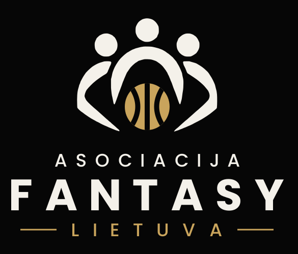

Antrasis sezonas · 2026/27
BasketNews Fantasy · draft lyga · 10 komandų

Eurolygos fantasy
turas iš 38
lyderis
Lygos laikraštis
Lyga
Eurolygos fantasy
▾
🔍
Paieška
/
Turo patarėjas
Lyga
Lentelė
Turai
Komandos
Mainai
Mainų skaičiuoklė
Laisvieji agentai
Draftas
Apžvalgos
Istorija
Analizė
Galios reitingas
Sprendimai
Analitika
Koeficientai
Žaidėjai
Eurolyga
Eurolyga
Eurolygos istorija
Kita
Taisyklės
Mano komanda
Įrankiai ▾
Tamsus režimas
Rungtynių kalendorius
Turo paveikslėlis
Lentelės paveikslėlis
Turo ir lentelės paveikslėlis
Spausdinti
Įdiegti programėlę
↑
Kraunami lygos duomenys